-
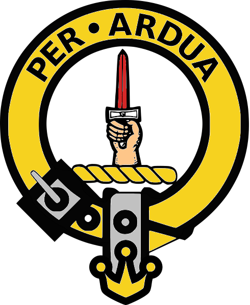
The McIntyres of Kilmonivaig
There are two McIntyre families tied into our family history. The story told here is about the family descended from our ancestors, Duncan McIntyre and Catherine Kennedy. They were at one time farming in Kilmonivaig in Inverness-shire and later living in Glasgow. There's a likelihood they had always owned property in Glasgow, which is where their sons, Alexander, William, Allan, Duncan Kennedy and possibly Archibald resided while studying at the Glasgow College.
The McIntyre brothers John, Allan, Archibald, William, Donald and Duncan Kennedy at one time or another, all migrated to Australia. Archibald's wife Jessie and her seven children, including their son Duncan and his wife Isabella and both of their children, also made the big trip across the ocean.
These names will turn up again later when their paths intertwine in Australia with those of another family of McIntyres, possibly blood relatives, who also came to be related by marriage, enterprise and friendship. More is told about them in another part of the tale, The McIntyres of Glenartney.Kilmonivaig Parish Church and surrounds
Kilmonivaig
Our McIntyre ancestors can be traced back to the Scottish parish of Kilmonivaig in what is now Inverness-shire. Duncan McIntyre and his wife Catherine Kennedy had twelve of their children registered on a single record at a place called Unachan, written on the record as Munachan or perhaps Mnuachan. Since Gaelic was the spoken language in this area, the spelling can vary and the handwriting is often difficult to read. On old maps, Unachan, sometimes spelt Aonachan, is located near the High Bridge which crossed over the river Spean. Around the middle of the nineteenth century a newer crossing was built where the modern village of Spean Bridge is now situated. Unachan is just west of that bridge and Duncan McIntyre has been said to be a farmer there, or more specifically, a sheep farmer, but what his actual profession was, is another matter.
Duncan McIntyre
and Catherine Kennedy
Kilmonivaig has had a number of churches and the information we now have might easily have originally belonged to any of them. The hand written record is likely a transcription, possibly after a new church was built, or after the floods of 1845. Where the children were actually born and where they were registered could well be different places.
Not much else is known about Duncan and Catherine, but by 1841, as can be gleaned from the record of her burial that Catherine had been living in Claybrae in Glasgow and that Duncan had already passed away. Claybrae as will be seen later, is alongside the Glasgow College where their sons had studied.1841 - Register Death Feb 13, Burial Feb 18,
Catherine Kennedy Widow of the late Duncan McIntyre, Farmer, Residence at Claybrae, Undertaker Wylie Lochead, Where Buried In the Lair of Mr. McIntyre 2/24D, Churchyard St. Mungos, Causing Death Aged, Female, Age 67, Carriage Hearse, Horses 2, Charge for Funeral 6 shillings» Duncan McIntyre (1767 – 1838)
married Catherine Kennedy (~1774 – 13.02.1841)
in Inverness (parish), 1792
and they had the following children:
Ann McIntyre 26.03.1793 –
*Kilmonivaigunknown
†unknownstatus unknown John McIntyre 01.05.1794 –
*Kilmonivaig07.04.1857
†Pitnacree Estate, East Maitland(unmarried) Catherine McIntyre 01.05.1796 –
*Kilmonivaig02.08.1835
†Glasgowm. Ewen McKinnon in Kilmonivaig, 30.01.1815 Allan McIntyre 15.07.1798 –
*Kilmonivaig31.05.1870
†Sydneym. Jemima Pilcher in Maitland, 06.05.1862 Alexander McIntyre 11.01.1801 –
*Kilmonivaig11.03.1883
†Tradestonm. Sarah McKenzie in Kilmallie, Argyll, 24.02.1833 Archibald McIntyre 15.07.1804 –
*Kilmonivaig19.08.1861
†Aberdeenm. Jessie Dewar Halling in Kilmonivaig, 18.12.1828 William McIntyre 06.03.1806 –
*Kilmonivaigtuesday 12.07.1870
†Manse, Roslyn Terrace, Macleay Street, Sydneym. Mary McIntyre in Maitland, 03.04.1844 Angus McIntyre 06.12.1809 –
*Kilmonivaigunknown
†unknownstatus unknown Donald McIntyre 03.03.1811 –
*Kilmonivaig02.09.1860
†Byron Station, Inverellm. Margaret McGregor in At the residence of Matthew Gibson, Liverpool Street, Hyde Park, Sydney, 19.12.1854 Neil McIntyre 16.07.1813 –
*Kilmonivaigunknown
†unknownstatus unknown Ewen McIntyre 18.09.1814 –
*Kilmonivaigunknown
†unknownm. Margaret Annand Duncan Kennedy McIntyre 16.04.1817 –
*Kilmonivaig17.12.1899
†Thyra, 69 Victoria Street North, Sydney(unmarried) Duncan later used his mother's maiden name as his middle name
Unachan, Lochaber and InverlochyInverlochy bordered by the Spean River
Unachan, or Aonachan, was part of the Inverlochy Castle Estate owned by the Duke of Gordon. The estate was just to the north of Ben Nevis, in the area of Lochaber, which before the nineteenth century, was a district made up of the large original parishes of Kilmallie and Kilmonivaig. Lochaber extended from the northern shore of Loch Leven, known as Nether Lochaber, to beyond Spean Bridge and Roybridge, known as Brae Lochaber.
Some experts claim the name Lochaber means "loch of swamps", a "historic water feature", and Unachan was no exception, being itself often described as a rather swampy place. As was the fashion at the time, the Gordons had the idea of running a half a dozen or so large sheep farms on the estate rather than having a multitude of small tenancies. It's possible that the advertisements they ran for land leases around 1800 enticed Duncan to the area to try his hand at farming. With the death of the 4th Duke of Gordon in 1826, the game had changed, and this may have nudged the family to move on.
Inverlochy Castle EstateInverlochy Castle Estate c1842
This map shows Unachan situated close to the northern boundary of Inverlochy estate where the Spean water flows. In the south west corner is the town or garrison of Fort William which was built alongside the ruins of Inverlochy castle.
Over the southern boundary is Glen Nevis and the highest mountains in Scotland and the British Isles, Ben Nevis, Càrn Mor Dearg, Aonach Mòr, and Aonach Beag.
Ye'll take the high road and I'll take the low road
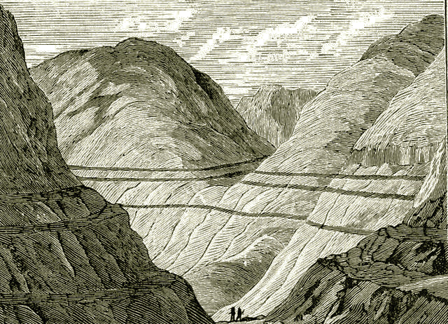As can be seen from the map, there is a place alongside Unachan called Parallel Roads. Early in the nineteenth century a lot of interest was generated about Parallel Roads which featured prominently in the development of geological science. Even by 1838 Charles Darwin was still so fascinated by the phenomenon he visited and studied the area, writing a paper on it which was published a year later. The Parallel Road areas of Lochaber still continue to attract a great deal of attention to this day.Parallel Roads
So what are Parallel Roads, and what makes them continue to inspire research and speculation? They appear as a series of massive horizontal lines carved into and running across mountain sides. In days of old the locals thought they were the work of fairies. The currently trending theory is that each one was an ancient ice age shore-line. Despite its remoteness and isolation from city life, Unachan proved to be close to a hub of scientific activity with experts in their fields visiting from all over.That wasn't the only activity around Lochaber at the time. From 1803 to 1822, the Caledonian Canal was being built in an attempt to create new employment for those displaced by the sheep farming.The Caledonian Canal and Ben Nevis c.1843
by Edward Gennys Fanshaw
The enterprise somehow backfired when the local workers were absent most of the time for harvest or other pursuits. As a result, a flood of Irish workers were brought in and raised tensions.
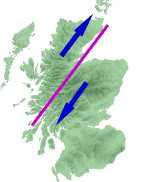And Whose Fault Is That ?The movement of the tectonic plates of the Great Glen Fault
Speaking of geological phenomena and the Caledonian Canal can't be complete without a mention of the Great Glen Fault. The valley surrounding the Spean River is known as Spean Glen and it runs into the Great Glen of Scotland, Glen Albyn, where the Caledonian Canal was built.
The Great Glen itself runs from Fort William at the head of Loch Linnhe to Inverness on the Moray Firth effectively dividing the highlands into two sections, the Grampian Mountains to the south-east and the Northwest Highlands to the north-west. Millions of years ago these two sections moved in different directions as the result of being part of huge colliding tectonic plates. Even though recently mostly inactive, there are still slight residual movements nowadays resulting in moderate tremors.
Lochaber No More
Whatever the case, it was also time for the McIntyres to move and some of the older lads of the family had reached an age to gain some higher learning. The number one address for a proper education at the time was the Glasgow College. Both Allan and William, who later became reverends of the Free Church of Scotland, were educated there. By 1828 they had their own Academy in Glasgow. That was also the year of probably the last mention of Kilmonivaig on any Scottish record for the family, when Archibald at the tender age of 24 was betrothed to Jessie Dewar Halling aged 20. Jessie's mother Catherine Halling was living and working in Maryhill on the north side of Glasgow, which was likely another enticement for the newly-weds to settle near there. The occasion of that wedding could also have served as an opportunity to have a double celebration to mark the final removal of the McIntyres from Lochaber to Glasgow.
The Glasgow College
Glasgow College with its 140 foot tower seen here in the High Street. Later the college was restyled as Glasgow University.
Duke street runs across the top of the picture. The bright building in the middle of Duke Street is where Allan and William first had their Academy.
On the far right the Molendinar burn runs down past the college garden seen as a large green area.
Glasgow, or Glaschu in Gaelic, developed out of an original core settlement that sprang up around the Molendinar burn. At that time the burn ran wildly through a deep ravine past the Glasgow Cathedral on its way down to the Clyde river. By 1836 the Molendinar had been tamed and a crossing over it to reach the Glasgow Necropolis was built and came to be known as the Bridge of Sighs.
The Molendinar was only a couple hundred meters away from the McIntyres' Academy at 21 Duke street. Running off Duke street and alongside the burn was the aptly named Burnside lane and off that was a place called Claybrae. This was the address their mother Catherine had at the time of her passing in 1841. Whether or not that place had been the family home since they moved from Kilmonivaig can only be left to speculation.
Trongate or Old Glasgow Cross 1826
by John Knox (1778–1845)By the 1820's Glasgow was a bustling city with newly built areas springing up all over. At the forefront, were two neighbouring developments, Tradeston and Laurieston, in the Gorbals district on the south bank of the Clyde.
An early painting of the village near the Molendinar burn with the Glasgow Cathedral in the background. The cathedral, also known as Saint Mungo's was dedicated to Kentigern, better known as Saint Mungo, patron saint and founder of Glasgow.
Tradeston was developed in the 1790's and was soon followed, from 1802 to 1818, by the adjoining Laurieston, an ambitious enterprise of Glasgow merchant James Laurie. And in these two places was where the McIntyres set up shop and school.
Extracts from the Glasgow Postal Directories 1828-1842
Allan (left) and William
The McIntyre Brothers
Teachers and Preachers
In 1828 McIntyre's Academy was listed in the Glasgow Post Office Directory at two addresses. One was 268 High street, in the same street as the Glasgow College. The other was around the corner at 21 Duke street the same address where J. McIntyre, very likely John, had a worsted wool shop.
By 1830, William had joined Allan, and together they were listed as McIntyre, Messrs, teachers, at 22 Norfolk street on the south side of the Clyde in the new upmarket district of Laurieston. 1832 saw another move to 42 Norfolk street with a residence at 43 Cavendish street.
They remained in Norfolk street until 1834, but had moved a few doors down to number 60. William and Allan are listed together as teachers up to and including 1837 but William migrated to Australia that year. From then on, it can only be assumed that the continued listing of McIntyre, Messrs, teachers referred to Allan and another brother, Alexander who was also a teacher, and eventually Duncan Kennedy, the youngest brother. The teacher-brothers remained residing at Cavendish street till 1839 having moved to 53 Buccleuch street.
Alexander remained a school teacher, lived in Glasgow and then in Doune, married Sarah McKenzie in 1833, had five children and eventually also became a Preacher of the Gospel like his brothers. Later in life he moved back to Tradeston in Glasgow, with his entire family, and lived there until passing away in 1883. Whatever happened to the other children of Duncan and Catherine, namely Ann, Angus, Neil and Ewen is somewhat more difficult to discover. Claims of migrating to Canada and having families there look equally likely and unlikely.
Alexander McIntyre
and Sarah McKenzie
» Alexander McIntyre (11.01.1801 – 11.03.1883)
married Sarah McKenzie ( ?.?.~1813 – unknown)
in Kilmallie, Argyll, 24.02.1833
and they had the following children:
Duncan McIntyre 12.01.1834 –
*Glasgowunknown
†unknownstatus unknown John Kennedy McIntyre 28.02.1835 –
*Glasgowunknown
†unknownstatus unknown Angus Allan Cameron McIntyre 15.01.1837 –
*Barony, Glasgow??.??.1881
†Tradestonstatus unknown Ewan McKinnon McIntyre 30.08.1838 –
*Barony,Lanark,Scotlandunknown
†unknownstatus unknown Alexander McIntyre 1844 –
*unknownunknown
†unknownstatus unknown

Jemima (Pilcher) McIntyre
Allan McIntyre
Daughter, Catherine Jemima Eliza McIntyre
Allan McIntyre
and Jemima Pilcher
While Allan was running the McIntyre Academy in Glasgow, he joined the Free Church in 1843. He then successfully completed a divinity course at the New College and was ordained in 1846, becoming the first minister of the Paisley Free Gaelic congregation. As mentioned later, he travelled to New South Wales with his brother, William, in 1854 and was there appointed to the Manning River district where he developed a strong congregation of three churches, at Tinonee, Wingham and Redbank.
He was described by J. C. Robinson as 'faithful, forceful and searching' and 'a man of terrific earnestness which showed him to be a real son of thunder'. In 1862, when Allan was almost 64, he married Jemima Pilcher, from Inverness in Scotland, who was 31 at the time. Jemima was the daughter of Henry Incledon Pilcher, a solicitor in Maitland and her brother was Charles Edward Pilcher, a barrister in Sydney. This would somewhat explain the successful careers of her sons.
Duncan Allan McIntyre not only became a solicitor, he also owned and ran the Inverell Times. Duncan was married to his father's niece, Jessie Eglantine Jane Upton McDougall Balfour McGregor, whose mother, Eglantine Jane Upton Balfour MacDougall (McIntyre) McGregor, was the daughter of Allan's brother Archibald.
Another son of Allan and Jemima was William Donald McIntyre, was a barrister of the Supreme Court of NSW, and State Member of Parliament for Inverell. Tragically his career was cut short by his untimely death at the age of 33, having been only 12 months in politics. He was also the author of several legal works.
When Allan passed away in 1870, he left behind his 39 year old widow, Jemima, and their five young children, ranging in age from 7 years old to only 1 year old. Jemima then bundled up her children and moved in with her mother at Snail's Bay and then at Darling Point, Sydney. About 1873, the family then moved in with Allan's brother, Duncan Kennedy McIntyre at Manning River, at the Manse in little Tinonee. When Duncan Kennedy was succeeded by Rev. S.P. Stewart, the enlarged family moved to the fashionable Sydney suburb of Surrey Hills.
In the reminiscences about Duncan Kennedy, by of Allan's son, Duncan Allan McIntyre, the old Scotch people on the Manning River knew little English and "treated my uncle most reverently, and as he passed through a double row of them at the church entrance door, knelt down and kissed his hands, and kissed me for my father, and gave me bottles of jam and other presents to take home in the boat in which I used to row my uncle (whilst he slept) from end to end of the river".
» Allan McIntyre (15.07.1798 – 31.05.1870)
married Jemima Pilcher (06.03.1831 – 14.09.1913)
in Maitland, 06.05.1862
and they had the following children:
Catherine Jemima Eliza McIntyre 1863 –
*Sydney10.07.1949
†Chatswoodm. George Christie in Sydney, 1884 Allina (Eliza Sarah) McIntyre 1864 –
*Grafton06.11.1946
†Burwoodstatus unknown Jemima Emily Maria McIntyre 1866 –
*Newcastle29.01.1946
†Burwoodstatus unknown Duncan Allan McIntyre 1867 –
*Manning River21.06.1947
†Inverellm. Jessie Eglantine Jane Upton McDougall Balfour McGregor in NSW, 1896 William Donald McIntyre 02.01.1869 –
*Manning River04.05.1902
†Sydneym. Sara Louise Caro in Sydney, 1897

Glasgow Directory entries from 1836, 1837 (twice)
The Restless Years
While the teaching academy of Allan and William was taking off, their brother, Archibald and father Duncan had a boot and shoe making business not far away in Eglinton Street. As mentioned earlier, Archibald had married Jessie Halling in 1828 and their first son, Duncan who was born in 1830, was named after his grandfather.Eglinton Street running into Bridge Street and over Broomielaw Bridge
At the time, Archibald was a spirit dealer. The couple then had another three children in Glasgow before moving off to Edinburgh. The first of the three was Elizabeth who was born in 1832, then there was Flora in 1835 and Katherine in 1836. Tragically, Elizabeth died at the age of two, and on her burial record in 1835, Archibald was a leather cutter at Eglinton street in Tradeston.
The next year, 1836, there was a listing in the Postal Directory for McIntyre Archibald, & Co. Boot and c.[cord] maker, at numbers 7 and 9 Eglinton street, so Archibald was either still working with, or had taken over, his father's business. A year later, in 1837, Archibald must have joined forces with his father, as the listing in Pigot's directory was for McIntyre Duncan, boot & c. maker, 9 Eglinton street. Then, they were gone. Perhaps Duncan, the father, had died, and Archibald had left with his family for Edinburgh.
Catherine Halling's Will dated 1837 refers to the couple as, "Jessie Halling my daughter wife of Archibald McIntyre residing in Eglinton Street Tradeston near Glasgow".
Archibald and Jessie surface again on the record for the census of 1841, living at Boswell's Court, 392 Castlehill, near the Edinburgh Castle. Archibald was then working as a turnkey, (the person in charge of the keys) at a prison, possibly at the Canongate Tolbooth. Later that year when their son John Archibald was born, Archibald had already moved on to being a Gentleman's Servant.Boswell's Court
1841 Census at Boswells Court for Archibald, Jessie and children
That was the occupation he held for at least the next four years, and when Eglantine was born in 1845, the family had moved to 18 Wrights Houses opposite the Bruntsfield Golf Links. By the 1851 census, they were a few doors down at 26 Wrights Houses, joined by another two of Archibald and Jessie's children William and Mary, but with Jessie as the head of the household and Archibald not mentioned. Duncan was already married and living not far away. Katherine Amelia was in London (with her grandmother Catherine Halling) attending the Catholic School in St. Pancras.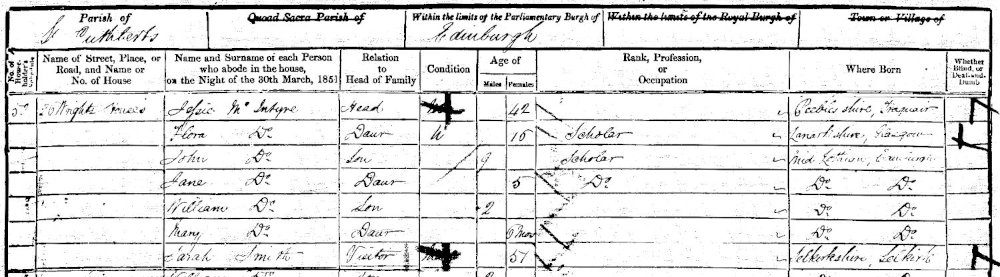1851 Census at Wrights Houses for Jessie and children.
Sarah Smith, the 57 year old visitor was also living with them,
probably to help with the large family and especially the small children.
Wrights Houses, viewed from across Bruntsfield Golf Links, Edinburgh
The McIntyres in Australia
1837, William Migrates on the Mid Lothian
Sailing into Sydney Harbour
Rev. William McIntyre
In 1837, William had caught the attention of Rev. Dr. John Dunmore Lang who "was impressed by his preaching and recruited him for the ministry in NSW, where some of his cousins had settled." This was to be expected, for after William had "taught for a time with his brother Allan McIntyre in McIntyre's School, Laurieston, Glasgow before heading a school at Tradeston, Glasgow which he claimed 'was the very first educational institution in that city'. Meanwhile he completed the Divinity course at Glasgow and was licensed by the Presbytery of Dunoon." (the quotes are from the Australian Dictionary of Evangelical Biography)1837 Arrival of Rev. William McIntyre in Sydney aboard the Mid Lothian
Starting from when William arrived in New South Wales in December 1837, he was constantly in the news. He had arrived with a ship, the Mid-Lothian, packed full of highlanders from the Isle of Skye, personally selected by Rev. Dr. Lang for being a valuable asset to the growing colony, by providing skilled, upstanding, god-fearing protestant hard-workers. Those Scottish emigrants became restless in the news, fearing they would be separated from their Gaelic speaking minister and eventually succeeded in being moved to the Dunmore Estate at Maitland, belonging to Andrew Lang, the brother of Rev. Dr. Lang. Therefore, William also moved to Maitland to provide for their needs. Throughout his life, William wrote many newspaper articles and books espousing the virtues of his faith.
Not only did he do that, he also built a school where he taught without payment and is well remembered for having taught quite a few prominent Australians. In 1844, he married Mary McIntyre, the sister of the early pioneer of the Hunter Valley, whose Pitnacree House was at Maitland. When Peter passed away, Mary had inherited Peter's estates and together with William took over running Pitnacree as well as huge tracts of lands from the Hunter Valley up to New England. Mary and William built themselves a 22 room house on Pitnacree Estate.
A CONCISE TIMELINE FOR WILLIAM MCINTYREOne of William's High School students, later Sir Samuel Griffiths, a Premier of Queensland and Australia’s first Chief Justice, described him as ‘a remarkable man, whose name deserved to be remembered as one of the foremost worthies of NSW’.
1806 born in Kilmonivaig
1823 started studying at Glasgow College
1828 started a school in Glasgow with his brother(s)
1837 ordained as a Reverend in Doune
1837 migrated to NSW on the Mid-Lothian with Lang and Highlanders
1838 appointed as professor of divinity in Dr. Lang's Synod of NSW
1844 married Mary McIntyre (likely not related)
1854 returned to Scotland with Mary to recruit more Reverends
1854 returned to NSW on the Berhampore with more family and Reverends
1855 established the high school of Maitland
1857 acted for years as the headmaster without payment
1860 Maitland riots with Donald injured (proving to be fatal)
1862 inducted minister of St George's, Sydney without stipend
1870 passed away in Sydney at ag of 64
1854 Berhampore Passenger List:
Rev William and Mrs Mary McIntyre,
Rev Allan McIntyre
Duncan Kennedy McIntyre,
Rev J. McCulloch,
D.S. (Duncan StClair) Maclardy,
Mrs Margaret (McKinnon) Maclardy,
Miss Catherine McIntyre Kennedy Maclardy,
William McIntyre StClair Maclardy,
Mr Malcolm McIntyre Campbell,
Mrs Joanna (McKinnon) Campbell,
and Miss Sarah McKinnon1854, More Migration
The work already achieved by William in Maitland would become very handy for the rest of the family who would eventually migrate at the William's behest. Seventeen years after entering the colony, William returned to Scotland as the delegate for the Church of Eastern Australia. He and his wife Mary sailed from Sydney on the Kate which departed for London on January 12, 1853. Back in Scotland, William successfully persuaded his brothers Allan and Duncan Kennedy to also become Reverends and join him on his mission in the new homeland. They arrived in Sydney on November 7, 1854 with lots of other family and friends on the Berhampore just a few months after Jessie and Duncan had made the trip. More of this will follow.
Exactly when it was that William's brothers, John and Donald McIntyre, arrived in Australia remains a mystery. Indeed the same can be said about Archibald too, as well as some of the other McIntyres. For instance, William's wife Mary and her brothers, also named John and Donald McIntyre, all managed to slip into Australia without leaving a paper trail. What is known, is that both John and Donald were at Pitnacree, working for Mary or her brother, Peter, so it's likely they had arrived in the colony rather early.
William's sister, Catherine McIntyre known as Ket, had remained in Scotland and married Ewen McKinnon in 1812. Three of their daughters also migrated to Australia, one of which, Sarah McKinnon, married William's friend Rev. James McCulloch in Australia. In fact in 1854, James McCulloch had accompanied William, Allen, Duncan Kennedy and niece Sarah, and her sisters Joanna and Margaret, and their husbands to Australia all on the same ship, the Berhampore.
1827 Purchase of more land by Peter McIntyre of Pitnacree
Land Grievances in the Weekly Register
FOR LOVE AND AFFECTION...
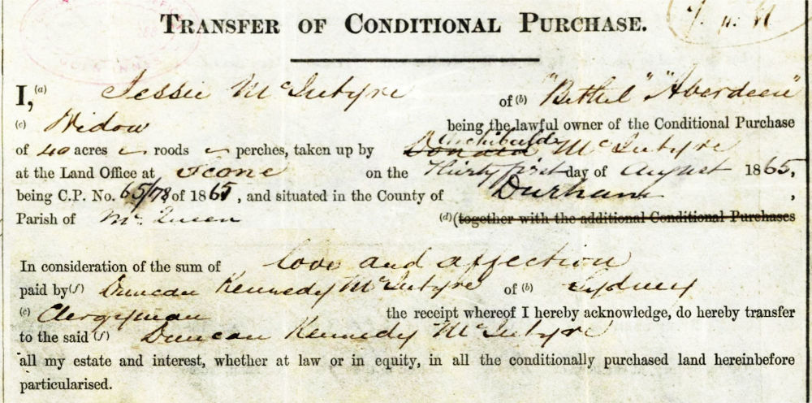1865 Transfer from Jessie (Halling) McIntyre to Duncan Kennedy McIntyre for the sum of "love and affection"
Rev. Duncan Kennedy McInytre
1896 John Archibald sells Waterloo to Sinclair and Scott
McIntyre Lands
Most of the McIntyres, their spouses and their children bought and sold land in a big way.
Peter and Mary, "The McIntyres"
Ever since Peter McIntyre arrived in New South Wales, he took to buying up acreage. While managing the Segenhoe estate for Thomas Potter Macqueen in the Upper Hunter River Valley, Peter's first big purchase was of the neighbouring crown lands, which he called Blairmore, named after his family's property near Comrie in Scotland.
Peter then purchased land alongside his brother John's Toryburn Estate in East Maitland, which eventually became Pitnacree Estate. With a suitable agent working for him, he was able to secure huge pastoral grazing lands in New England, establishing himself around and in the area later known as Wellingrove and Waterloo, as well as many others. When Peter died, his sister Mary inherited his estates and expanded them enormously.
Historically, even during their lifetimes, the McIntyres, Peter, Mary, Donald, Duncan Kennedy, John Archibald, Jessie and others came to be known collectively around Glen Innes, Inverell, Byron and Wellingrove (to name but a few), as "The McIntyres", meaning "the big land owners".
Donald McIntyre
After running Blairmore for Peter McIntyre, Donald eventually bought up the estate, which was later sold to his nephew John Archibald, the son of his brother Archibald. Donald and his sister-in-law, Mary, also took to taking up conditional purchases, some of which were taken over by Donald's brother, Archibald and his wife Jessie, becoming "Bethel" station. After Donald was running Blairmore, the management went into the hands of John McGregor, the husband of Eglantine McIntyre, the daughter of Donald's brother Archibald. This was very likely during the time in which Eglantine's brother, John Archibald, took up ownership.Duncan Kennedy McIntyre
Duncan Kennedy systematically bought up lands at Waterloo alongside of, or formerly owned by, Peter McIntyre or his sister Mary, the wife of William, Duncan Kennedy's brother. He was sometimes criticised for being an absentee owner of lands and stations, being busy with his church work and residing in Sydney.Archibald and Jessie McIntyre
As has already been mentioned, Archibald and Jessie established their own run in the Upper Hunter Valley, named "Bethel" alongside the town of Scone. Read more below...Duncan McIntyre
Duncan, the son of Archibald and Jessie, settled in the Northern Rivers district and bought and sold lands in and around that area. He also at times, swapped or exchanged lands with his brother, John Archibald and his uncle, Duncan Kennedy.John Archibald McIntyre
Another son of Archibald and Jessie, John Archibald learnt at an early age how to run stations and properties. It was a natural progression for him to start buying into them as well. His ultimate goal after taking over Blairmore in the Hunter Valley, was to acquire lands on and around the Waterloo Run of Mary McIntyre, albeit piecemeal, to create a very large estate which became "Waterloo Station" near Glen Innes and Inverell.
18 December 1828 - Marriage of Archibald and Jessie in Unachan
Archibald and Jessie (Halling) McIntyre
Archibald McIntyre
and Jessie Dewar Halling
Jessie's early life with her mother Catherine Halling, who was a housekeeper at Garscube Estate, obviously had some influence over naming the girls when they were born. Catherine's friend and confident at Garscube was Elizabeth Campbell nee Balfour who was married to the owner, Sir Archibald Campbell of Succoth.One of their daughters was named Katherine Amelia Campbell and was about Jessie's age. Both girls must have grown up together on the estate. Katherine Amelia Campbell's slightly younger first cousins on her mother's side were Eglantine Charlotte Louise Balfour and Katherine Jane Balfour (the diarist famed for being captured by rebels in Canada).Garscube House in Glasgow
Noting that Jessie's first daughter was called Elizabeth Campbell McIntyre and her third Katherine Amelia Campbell McIntyre, the naming gets even more intriguing when considering that of the fourth daughter, Eglantine Jane Upton Balfour MacDougall McIntyre. There is a great likelihood that the above mentioned ladies in the Campbell and Balfour families acted as Godmothers at the births of Jessie's daughters. Whatever the case, names such as Jessie, Katherine, Eglantine, Balfour and Campbell have been maintained in the family over many generations and show little sign of dying out. The two youngest children, William and Mary were most likely named after their Uncle and Aunt, Rev. William and Mary McIntyre.
A New Life in New South Wales
Jessie arrived in Sydney with all seven of her children including the eldest, Duncan with his new wife Isabella and their two children. Archibald had travelled out earlier, probably around 1851 to set up a new home before the rest of the family arrived. Duncan, the eldest child of Jessie and Archibald, was 23 upon arrival and Mary, the youngest, was only about three or four.
So the adults would have had their hands quite full bringing everyone into safe quarters upon arrival. Duncan and Isabella immediately settled at Miller's Point in Sydney and when Archibald met up with Jessie and the other children they moved to Maitland, where Archibald's brother William had settled at Pitnacree, the estate established by Peter McIntyre before being inherited by William's wife Mary.
From here on, our main emphasis is on the family of Archibald and Jessie and what happened to their descendants, yet there needs to be also a mention of the other family members and their activities.» Archibald McIntyre (1804–1861)
married Jessie Dewar Halling (1808–1887) in Kilmonivaig, Lochaber, Inverness, 18.12.1828and they had the following children:
Duncan McIntyre 25.06.1830 –
*Glasgow15.09.1916
†Wardellm1. Isabella Kelly in Edinburgh, 9.02.1851
m2. Ellen Kirby in Pimlico, 23.10.1865
m3. Elizabeth May McDonald in Broadwater, 19.05.1875Elizabeth Campbell McIntyre 20.04.1832 –
*Glasgow02.03.1835
†Glasgow(almost three years old) Flora Mary McIntyre 1835 –
*Glasgow3.02.1878
†Redfern(unmarried) Katherine Amelia Campbell McIntyre 27.09.1836 –
*Glasgow07.11.1916
†Sydneym. John Bridge in West Maitland, 24.05.1860 John Archibald McIntyre 20.09.1841 –
*Edinburgh05.08.1927
†Toowoombam1. Christina Campbell in Newstead, near Inverell, 20.08.1863
m2. Isabella Martha Muirson in Wellingrove, 1877
m3. Mary Agnes Clarke in Campbelltown, 1886
m4. Elizabeth Oliver in Glen Innes, 2.11.1895Eglantine Jane Upton Balfour MacDougall McIntyre 28.08.1845 –
*Edinburgh19.07.1920
†Inverellm. John McGregor at Blairmore, Aberdeen, 4.03.1862 William McKinnon McIntyre 1849 –
*Edinburgh10.11.1933
†Strathfieldm. Catherine McIntyre Kennedy Mclardy in Orange, 1888 Mary Georgina McIntyre 1850 –
*Edinburgh3.11.1901
†Sydneym. John Cameron Campbell in Glen Innes, 31.03.1870 1830 Jun 25 - Birth of Duncan McIntyre
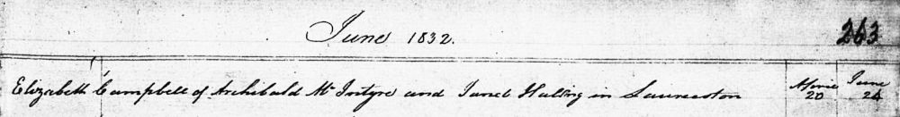1832 Apr 20 - Birth of Elizabeth Campbell McIntyre (bap. June 24)
1835 Mar 2 - Burial of Elizabeth Campbell McIntyre
at St. Mungos Burial Ground where her grandmother, Catherine (Kennedy) McIntyre was also buried1836 Sep 27 - Birth of Katherine Amelia McIntyre
1841 Sep 20 - Birth of John Archibald McIntyre
1845 Aug 28 - Birth of Eglantine Jane Upton Balfour MacDougall McIntyre
View of East Maitland, c1886
On to Maitland
Soon after their arrival in Sydney, Archibald and Jessie moved to Maitland in the Hunter Valley where Archibald's brother William had already established a home and school. In Maitland, Archibald and Jessie's children were educated not only by the same rigorous Highland style taught by William but also with a good serving of education in colonial life from their other uncles, John and Donald.
John Archibald, for instance became so savvy with property dealings he was already a manager at the end of his teens. He went on to become one of "The McIntyres" of New England fame. His sister, Amelia married the future wool brokering tycoon, John Bridge, in Maitland, later moving to Sydney. Sister Flora established a Catholic School in Maitland and in her later years, not having married, moved in with the Bridges in their Sydney residence.
Another daughter, Eglantine, married John McGregor, an imposing Scot from Dunstaffnage, who was also managing properties throughout his life. Jessie and Archibald's youngest child, Mary Georgina also married a property owner, John Cameron Campbell, and lived fairly close to her brother John Archibald who was in New England by that time. William McKinnon, the second youngest hooked up with one those close family ties who had accompanied William and his brothers to Australia.
Above: View of Musclebrook, 1869
Below: Jessie's signature on her land purchase
Brushy Hill near Musclebrook
Over the course of a few years, Jessie became a grazier, having progressively acquired land in her name at Brushy Hill near Musclebrook (later known as Muswellbrook) in the Upper Hunter River Valley.The five parcels of adjoining lands at Brushy Hill, two of which were first taken up by Archibald's brother Donald and William's wife Mary and then passed to Jessie, eventually became known as a property called Bethel. It's a curious name and since there is not much to go on when researching what Archibald and Jessie were up to in Australia, it's probably worth investigating.
Most people arriving in the colony of New South Wales had a tendency to name their new property after some place they had left behind in the old country. Originally people were being located in the countryside according to these property names but later as towns and cities grew up around the earlier settlements, street names and street numbers became more important. Archibald and Jessie were amongst the last settlers to call their property by a name. But life in the colony was not easy. Archibald's brother John died in April 1857. In September 1860 as a result of injuries he incurred at the Maitland Riots, brother Donald also died. Soon afterwards in May of 1861, Jessie's mother back in Scotland also passed away and then as a final blow after only another four months, Archibald himself died.1861 Aug 19 - Death of Archibald McIntyre
Archibald's restored headstone (photo 2022 from his 3rd-great-granddaughter Rebecca Reardon)
The epitaph on Archibald's headstone reads:
So teach us to number our days that we may apply our hearts unto wisdom.
PS XC:12.
The name "Bethel" also has something quite biblical about it and seems to hold some sort of hidden message. Hidden in the sense that they must have known what it meant but were leaving it up to everyone else to figure it out. In the Bible there are many references to Bethel as a House of God, or a place where there was a ladder to God, but that still doesn't offer up much of a starting point.
Wikipedia says: Bethel is mentioned in Ezra 2:28 and Nehemiah 7:32 as being resettled at the time of the return of the exiles from Babylon. The word "resettled" seems to strike a chord, as Archibald and Jessie were definitely early Australian settlers. Indeed, in the Postal Directory for New South Wales, Jessie had herself listed at Brushy Hill as "Mrs A. McIntyre, settler". So that could mean that they had left behind them a Babylon of sorts. Babylon of course was an ancient empire and perhaps it was just simply a quip about Scotland or Britain being the "old country", the ancient empire.
Isabella's home in Stockbridge, Leith
While I'm worth my room on this earth
I will be with you, while the Chief,
puts Sunshine On Leith
I'll thank him for his work
And your birth and my birth.
- The Proclaimers, Sunshine on LeithDuncan McIntyre
and Isabella Kelly (1st wife)
and Ellen Kirby (2nd wife)
and Elizabeth May McDonald (3rd wife)
Duncan, the eldest child of Archibald and Jessie, married three times. All three wives were Catholics which must have gone terribly against the grain of his three staunch Protestant Reverend Uncles. The first wife was Scottish, the second was Irish, the third was an Australian born to Scottish parents and just happened to be the sister of John McDonald, the husband of his eldest daughter, Jessie McIntyre. Duncan survived all three of his wives.
Isabella, Duncan's Sunshine on Leith
Duncan's first wife, Isabella Kelly, was the daughter of Joseph Kelly and Elizabeth Robertson who had also been married in Edinburgh, although twenty years earlier. At the time of her marriage to Duncan, Isabella was living in Stockbridge in the Leith area of Edinburgh. The newly married couple took up lodgings near Duncan's family who were residing alongside the Golf Links at Bruntsfield. Isabella's previous home was on the edge of the Leith Links. Perhaps they all liked watching golf while at home.
A few years before her marriage, young Isabella's father had succumbed to the rampant Typhus Fever when she was only nine years old. Even though the Kellys appear to have always been an Edinburgh family, Joseph had been working at the time of his passing as a gardener in Dundee. Strangely he was buried in the famous Howff cemetery where other members of our family, the Rankins, also had their final resting place.
From The Burial Records of the Dundee Howff Cemetery
Joseph Kelly, Burial 17 Nov 1843, age 38yr, birthplace Dumfries, Gardener, died from Typhus Fever, address ScouringburnMillers Point by Joseph Fowles 1845
Wardell, 1885
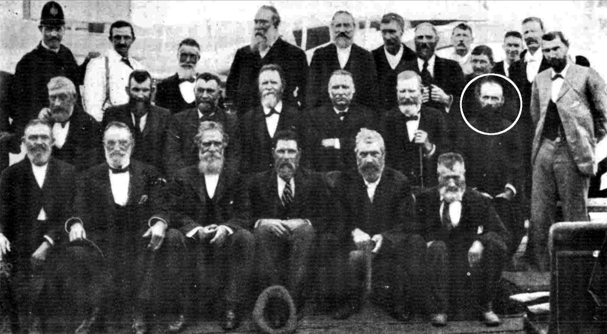1902 Reunion of the Pioneers
of the Richmond River
(Duncan McIntyre is circled in white)Firstly, Millers Point in Sydney
Since Duncan was a fully qualified Master Baker, he naturally enough set himself up in a bakery business in Sydney. This he did at Millers Point, aptly named for the presence of the flour mills there, which were needed by the rapidly flourishing settlement. If Archibald did indeed arrive in the colony before his family, it would be more than likely that he had found a location for Duncan's new bakery and residence at 42 Windmill Street and it was there that the family was first brought under cover upon arrival. It was Sydney where Duncan and Isabella had four more of their children.
Heading North
Altogether over the course of 65 years Duncan was married three times. During that period he also moved a lot, from Edinburgh to Sydney and from there through northern New South Wales, possibly following work, possibly seeking new horizons. He finally settled in Wardell as an early pioneer of the Richmond River district, where many other branches of our family were also to be found.
After Duncan's grandmother Catherine died in May of 1861 and his father in September of the same year, he turned up at his mother's place in Bethel near Scone presumably to look after the legals. Isabella passed away aged 31 in Sydney on the 6th of December 1863, possibly from an illness or from giving birth. Duncan then moved to the Northern Rivers and possibly left his children with his mother because his daughter Jessie told her daughter Flora that she grew up in New England. Two of Jessie's brothers, Donald and William Kellie also grew up close to their Grandma Jessie and died in Scone and Gundy Gundy respectively.
Settling in Wardell
Duncan allegedly supervised the building of a ship in Pimlico in the Northern Rivers district of the north coast area of New South Wales. He then moved a little further north to Wardell and literally set up shop there. His first store was on one side of the Richmond River and then another on the other side, at East Wardell.
He supposedly ran ships, moving produce outbound to Sydney and merchandise back into the Northern Rivers. Duncan also had his hands in many land and property transactions, including mills and a hotel. Upon Duncan's retirement, his son Allan Roy took over the shop business. Duncan's second wife, Ellen (nee Kirby), passed away aged 34 on January 3, 1875 and Duncan remarried a few months later.
When Duncan's mother Jessie died in 1887, he and his brother John Archibald became executors of her estate. They sold her grazing property called Bethel and distributed the funds. Upon Duncan's death, four of his children from his last marriage became executors of his estate but there was a caveat that the estate couldn't be sold for a specified number of years. The youngest child Roderick Dhu was left 20 pounds and successfully sued the estate for more. After the longest of Duncan's marriages, Elizabeth May (nee McDonald) eventually passed away, aged 64 in Ryde, 24th August 1913. Duncan died three years later in Wardell on 16th September 1916, aged 86.
» Duncan McIntyre (25.06.1830–15.09.1916)
married his 1st wife Isabella Kelly (1832–06.12.1863) in Edinburgh, 9.02.1851and they had the following children:
Archibald Royston McIntyre 1852 –
*Glasgow21.03.1922
†Wardellm. Clida Blanch Gulliver in Wardell, 05.05.1880 Donald McIntyre ~1853 –
*Edinburgh12.05.1876
†Scone(unmarried, 23 years old) Joseph McIntyre 1855 –
*Sydney1857
†Sydney(about 2 years old) Duncan Joseph McIntyre 1858 –
*Sydney24.11.1937
†North Sydneym. Jessie Hay Cameron in North Sydney, 13.04.1892 Jessie Halling McIntyre 1860 –
*Sydney10.01.1911
†Corndalem. John McDonald in Wardell, 17.07.1879 William Kellie McIntyre 1862 –
*Sydney01.07.1934
†Scone(unmarried)
Jessie Hay Cameron, wife of Duncan Joseph McIntyre
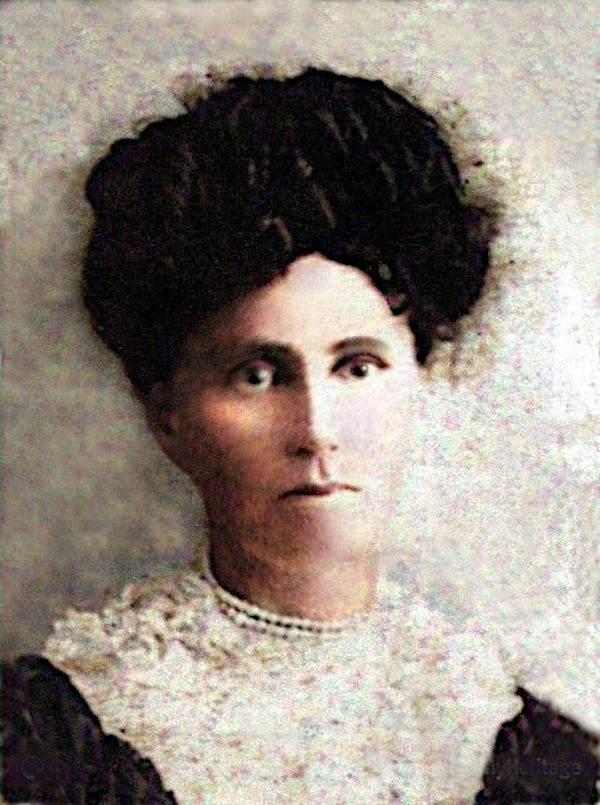Jessie Halling McIntyre, daughter of Duncan and Isabella
John Archibald McIntyre, eldest child of Archibald Royston
Duncan George McIntyre, youngest child of Archibald Royston
1863 Dec 6 - Death Certificate of Isabella (Kelly) McIntyre
» Duncan McIntyre (1830–1916)
married his 2nd wife Ellen Kirby (1840–1875) in Pimlico, 23.10.1865and they had the following children:
Ellen Isabella McIntyre 11.08.1866 –
*Pimlico26.09.1943
†Drummoynem. Ernest Charles Miller in Rocky Mouth, 3.01.1885 Flora McDonald McIntyre 27.06.1869 –
*Wardell10.07.1946
†Tweed Headsm. John William Benson in Wardell, 06.04.1892 John Angus McIntyre 10.03.1870 –
*Ballina7.05.1950
†Sydneym. Frances Clara McColm in Summer Hill, 27.04.1896 Allan Roy McIntyre 7.01.1873 –
*Ballina23.05.1950
†Waverleym. Alice Maude Sayers in Kogarah, 5.09.1894
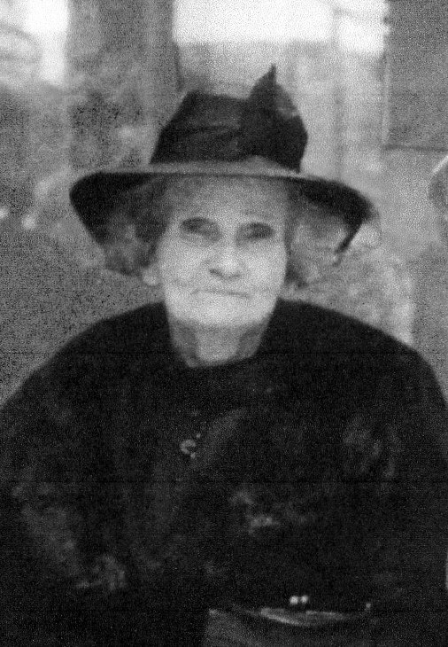Flora McDonald McIntyre who married John William Benson
1892 Marriage of Flora McDonald McIntyre to John William Benson

1949 Obituary for Flora McDonald (McIntyre) Benson
Aubrey Arthur Benson, son of Flora McDonald (McIntyre) and John William Benson
» Duncan McIntyre (1830–1916)
married his 3rd wife Elizabeth May McDonald (1848–1913) in Broadwater, 19.05.1875and they had the following children:
Clarence Duncan McIntyre 15.02.1876 –
*Wardell1.07.1946
†Kogarahm. Annie May West in Balmain South, 1898 Elizabeth McDonald McIntyre 14.02.1878 –
*Wardell17.01.1950
†Rose Baym. Michael Thomas Morris in Wardell, 2.07.1898 Eliza Clinton Neild McIntyre 22.05.1879 –
*Ballina21.04.1961
†Sydneym. Thomas Mulhearn in Ballina, 1898 Joanna Campbell McIntyre 1880 –
*Wardell31.12.1951
†Brisbanem. William Rudgley in Ballina, 1898 Eglantine Balfour McIntyre 26.04.1883 –
**Wardell26.04.1915
†Balmain(unmarried) Malcolm McKinnon Campbell McIntyre 01.10.1885 –
*Wardell19.09.1944
†Brighton-Le-Sandsm. Lorna Louise Gunter in Rockdale, 1921 Alexander Duncan McIntyre 07.07.1886 –
*Wardell13.07.1886
†Wardell(unmarried) Clara Georgina McIntyre 18.07.1887 –
*Wardell2.03.1954
†North Sydneym. William Frayling Talbot in Sydney, 1917 Olive Rachel McIntyre 06.07.1889 –
*Wardell22.06.1972
†Saint Leonardsm. Ernest James Cochrane in Sydney, 18.08.1928 Roderick Dhu McIntyre 15.12.1891 –
*Randwick24.12.1927
†North Sydneym. Constance Edith Jackson in North Sydney, 3.08.1918
Annie May West, wife of Clarence Duncan McIntyre
Gladstone Duncan McIntyre, son of Clarence Duncan and Annie May McIntyre
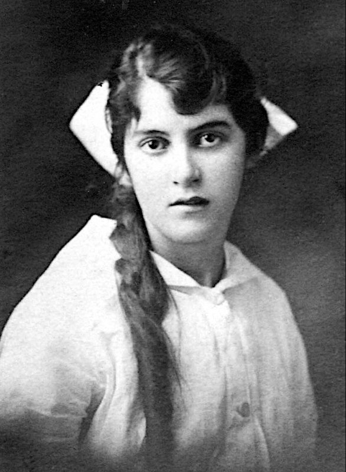Jessie Kathleen Halling McIntyre, daughter of Clarence Duncan and Annie May McIntyre
Diana Eglantine McIntyre, daughter of Roderick Dhu and Constance McIntyre
Roderick Dhu McIntyre
Constance (Jackson), wife of Roderick Dhu McIntyre
Roderick Nigel Balfour (Peter) McIntyre, son of Roderick Dhu and Constance McIntyre

Janet Winsome McIntyre, daughter of Roderick Dhu and Constance McIntyre

Richmond River District
John Bridge
Katherine Amelia Campbell McIntyre
and John Bridge
Katherine Amelia Campbell McIntyre, known simply as Amelia, was born in 1836 in Lauriston, Glasgow. In 1851, when Amelia was about 14, she attended the Catholic School in Clarendon Square, London. At the same time her mother's mother, Catherine (McDonald) Halling was also in London, staying with her long-time acquaintance, Eglantine Balfour, in Westminster, London, not far from the school.
1851 Census for Amelia at the Catholic School, 29 Polygon Buildings, 49 Clarendon Square, St. Pancras, London

Somers Town, Polygon on the left and St Aloysius chapel on the right, 1850
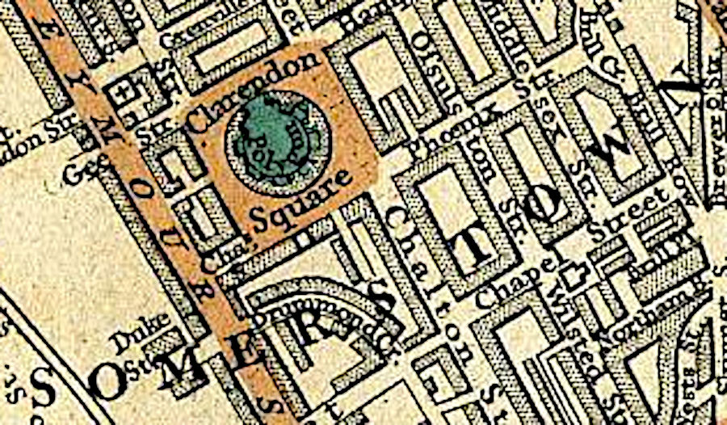Being the staunch catholic that she was, Catherine was obviously chaperoning Amelia during her education. This had a great influence on the family later in life, when Amelia's eldest child, Elvina Mary McIntyre Bridge became the Reverend Mother Mary Evangelist. Amelia's son, Leopold St Clair Joseph Bridge became the Reverend Father St. Clair Joseph Bridge and another son, Dr. Reginald Harold McIntyre Bridge, became Reverend Father Reginald Bridge.Map of the Somers Town district in London with Clarendon Squares having the Polygon in its center, 1837
Along with the rest of her family (almost), Amelia arrived in New South Wales when she was about 18 years old, in 1854. They then moved to Maitland to be with more family members who had already settled there, namely her uncle, Rev. William McIntyre and his wife Mary. In Maitland, Amelia met the bank clerk, later manager, John Bridge. John left the bank and joined the staff of the wool-brokers, Messrs. Irwin, Taylor & Co. in Circular Quay, Sydney.
With John's outstanding business acumen, it wasn't long before he became a full partner in the firm, renamed to Irwin and Bridge. He eventually withdrew from that partnership to start up on his own, at first small but eventually growing into the highly acclaimed John Bridge and Co. Limited, Wool Brokers, with a subsiduary in Brisbane. John was much admired and loved by his employees, not only for keeping his plant up-to-date with the latest technologies to relieve the workload on each individual but also for creating an enjoyable well-paid work environment. To protect the company from outside influence John eventually turned it into a proprietary limited company with four principal share-holders, namely three of his sons as well as Mr. Joseph Hayes who had been with John since the early days.
» Katherine Amelia Campbell McIntyre (1836–1916)
married John Bridge (1832–1897) in West Maitland, 24.05.1860and they had the following children:
Elvina Mary McIntyre Bridge 17.05.1861 –
*Maitland03.08.1946
†Sydney(known as Rev. Mother Mary Evangelist) Ernest John McIntyre Bridge 1862 –
*Maitland??.??.1911
†Glasgowm. Mary Catherine (surname could be O'Sullivan) Clarence Walter Bridge 1864 –
*Wollombi07.08.1924
†Sydneym. Helen McMahon in Sydney, 1887 Reginald Harold McIntyre Bridge 21.02.1866 –
*Aberdeen27.09.1909
†Darlinghurst(Reverend Father) Leopold St Clair Joseph Bridge 10.12.1867 –
*Maitland09.07.1929
†Sydney(Reverend Father) Florence Eglantine McIntyre Bridge 02.11.1869 –
*Wollombi03.12.1933
†Burwoodm. Walter Macdonnell-Kelly in Redfern, 03.10.1898 Amelia Mary Bridge 1869 –
*NSW10.07.1949
†Sydneym. Leonard Cecil Manning in Sydney, 28.05.1896 (Amelia Mary was born either in 1869 (FAG) or 1873 (BDM)) Lionel James Archibald Bridge 17.07.1871 –
*Wollombi16.03.1950
†m. Annie Elizabeth Stanley in Sydney, 26.04.1894 Norbert Henry W McIntyre Bridge 12.06.1875 –
*Redfern29.06.1960
†West Wallsendm. Bessie Wenzell in Sydney, June 1913
m. Isabella Jean McRae in Newcastle, 16.08.1941Leslie George Patrick McIntyre Bridge 26.08.1878 –
*Redfern16.02.1953
†m. Ethel May Watson in Sydney, 1906
Clarence Walter Bridge
Dr. Reginald Harold McIntyre Bridge at his graduation
Reverend Father Reginald Harold McIntyre Bridge
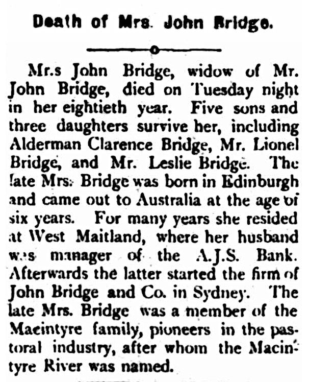1916 Notice of Death of Amelia (McIntyre) Bridge
John Archibald McIntyre, of Waterloo
John Archibald McIntyre
and Christina Campbell (1st wife)
and Isabella Martha Muirson (2nd wife)
and Mary Agnes Clarke (3rd wife)
and Elizabeth Oliver (4th wife)
John Archibald was the second eldest son of Archibald and Jessie. He was born in Edinburgh and took the trip to Australia with his parents when he was only twelve. His education continued at his Uncle William's school in West Maitland. From Uncles Donald and John, he learnt property management which he in fact took it up seriously as an occupation straight out of school.
Various stories are told of his working, managing and eventually owning Peter McIntyre's original station near Aberdeen known as Blairmore. From there he gradually acquired more and more of the lands which comprised Waterloo Station near Inverell. Many of these big land deals he made with his Uncle Duncan Kennedy. Between them many lands were bought, sold and swapped.
All in all John Archibald married four times. With all four wives he had children. Like his brother Duncan he survived all his wives.
In the Reminiscences of Donald McIntyre (no relation), a shepherd at Inverell:
In 1871 or '72 I went to Waterloo Station horse-breaking for Mr. J. A. McIntyre, who owned the station at that time - a nice gentleman with an inexhaustible fund of quaint humour that a person would never tire of. Many a laughable tale he put up on me while looking for lost sheep, but more of that later on. He was a very strict taskmaster notwithstanding his funny tales, and would come down on the men like a thousand of bricks.As an example of one of John Archibald's yarns, the Armidale Express from 23 August 1927, recounts his meeting with the notorious bushranger Thunderbolt, who had become aware that Mr. McIntyre had some fine hunting horses in his stables.On the evening of his visit to the stables Mr. McIntyre had been expecting a visit from a friend on horseback, and during the evening, hearing a horse arrive at the stables went out expecting his friend. All unknown to Mr. McIntyre it was Thunderbolt trying to break the lock on the stables to get to the hunters. Mr. McIntyre called to the horseman not to break the lock and he would get the keys and open the stables for him. The denouement, he said, was startling. With a wild leap onto his horse Thunderbolt wheeled the animal round, and according to Mr. McIntyre's impression at the time, the horse leaped over his head and disappeared into the distance.
» John Archibald McIntyre (1841–1927)
married his 1st wife Christina Campbell (1844–1876) in Newstead, near Inverell, 20.08.1863and they had the following children:
Archibald Robert McIntyre 1864 –
*Wellingrove26.03.1899
†Queensland(unmarried, about 35 years old) Catherine Campbell McIntyre 17.11.1867 –
*Waterloo??.02.1960
†Lismorem. Allen Alexander Lobban in St Leonards, 1896 Charles William Waterloo McIntyre 1870 –
*Wellingrove??.??.1933
†Wallsendm. Sarah McFarland Ormsby in Sydney, 1907 Jessie Kathleen Halling McIntyre 28.12.1871 –
*Wellingrove??.06.1951
†Rydem. John Boyd Cramsie in Glendon, Glen Innes, 30.06.1897 Christina Campbell McIntyre 1876 –
*Wellingrove??.??.1877
†Wellingrove(less than 1 year old)
Children of John Archibald and Christina (Campbell) McIntyre
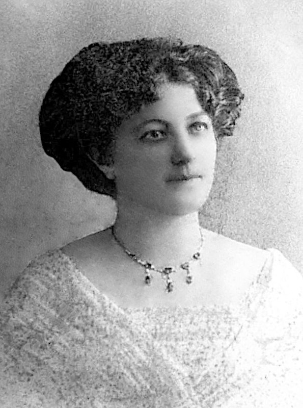Jessie Kathleen Halling McIntyre
John Boyd Cramsie, the husband of Jessie Kathleen Halling McIntyre
» John Archibald McIntyre (1841–1927)
married his 2nd wife Isabella Martha Muirson (1853–1885) in Wellingrove, 1877and they had the following children:
Olive McIntyre 1878 –
*Wellingrove06.09.1970
†Rydem. Charles John Campbell Cameron in Sydney, 1901 Christina Mary McIntyre 1879 –
*Wellingrove02.08.1969
†Toowoombam. Frederick Milburn in Woollahra, 23.12.1905 Duncan Kennedy McIntyre 24.06.1881 –
*Glen Innes01.10.1966
†Brisbanem. Ella Louise Moore at Lindisfarne, Mosman, 03.04.1912 Kenneth Muirson McIntyre 1883 –
*Glen Innes29.07.1964
†Brisbanem. Mary Frances Canning in Queensland, 23.09.1912 John Archibald McIntyre 04.04.1885 –
*Waterloo04.04.1885
†Waterloo(less than 1 day old, mother died 3 days later)
Isabella Martha (Muirson) McIntyre
John Archibald McIntyre with daughters, Olive and Christina Mary, c1885
Olive McInytre
Christina Mary McIntyre Nursing Graduation from RPA Hospital 1902
Christina's husband, Fred Milburn in 1919
» John Archibald McIntyre (1841–1927)
married his 3rd wife Mary Agnes Clarke (–1890) in Campbelltown, 1886and they had the following children:
Susan Gibson McIntyre 1887 –
*Glen Innes28.10.1985
†Goondiwindim. Lindsay Gordon McColl in St Leonards, 1916 John Archibald McIntyre 1888 –
*Glen Innes13.12.1962
†Brisbanem. Ada Louise Fleming in Hamilton, 1913 Mary Agnes McIntyre
(twin)1890 –
*Glen Innes06.07.1910
†Tenterfieldm. Frederick Burnaby Marshall in Glen Innes, 1909 Jane Elizabeth McIntyre
(twin)1890 –
*Glen Innes18.12.1962
†Brisbanem. Frederick Burnaby Marshall in Glen Innes, 1912 » John Archibald McIntyre (1841–1927)
married his 4th wife Elizabeth Oliver (1870–1925) in Glen Innes, 02.11.1895and they had the following children:
William Harold McIntyre 1896 –
*Glen Innes17.04.1984
†Blackheathm. Jean Margaret McRae in Tingha, 1925 Flora Craig McIntyre 06.01.1902 –
*Glen Innes16.09.1991
†Warialdam. Archibald Wallace McColl in Kalki, near Warialda, 01.03.1926 Robert Oliver McIntyre 07.07.1906 –
*Glen Innes01.12.1989
†Queensland(unmarried)
Eglantine Jane Upton Balfour MacDougall McIntyre
and John McGregor
Eglantine's Birth in Edinburgh
Eglantine, John and Family
Golden Wedding 1912
Eglantine Jane Upton Balfour MacDougall McIntyre
Eglantine Jane was the third eldest daughter and the third youngest child of Archibald and Jessie. Just like her next older sibling, John Archibald, she was born in Edinburgh. At that time, the family were living in Bruntsfield, alongside the Golf Links. Just eight years later she was whisked away to Australia with her parents and siblings.John McGregor all kitted out
Further information about her formative years is not forthcoming but we do know that at the age of seventeen, she married a tall, imposing upright Scot by the name of John McGregor, twenty years her elder. John, it is said, was the last McGregor to have been born in Dunstaffnage Castle near Oban. This thirteenth century stronghold built by the Lord of Lorn, Duncan McDougall, grandson of the famous Somerled was lost to the Campbells in the 15th century.
Dunstaffnage also became the name of the property in Byron settled by Eglantine and John and where they raised their six daughters and seven sons. The property which was the very first free selection in the Inverell District, was taken up by John on the first Thursday of 1866. At that time John was managing the Blairmore Estate in the Upper Hunter Valley for his brother-in-law Donald McIntyre, who was also Eglantine's uncle.
» Eglantine Jane Upton Balfour MacDougall McIntyre (1845–1920)
married John McGregor (1825–1915) at Blairmore, Aberdeen, 04.03.1862and they had the following children:
Donald McIntyre Gower McGregor 01.01.1863 –
*Blairmore22.04.1934
†Glen Innesm. Amy Mary Ellena Hockings in Glen Innes, 27.02.1889 Margaret McIntyre McGregor 26.08.1864 –
*Blairmore20.11.1958
†Sydneym. Walter Sydney Duncan in Inverell, 01.09.1892 Jessie Coburn McGregor 28.04.1866 –
*Wellingrove29.01.1872
†Inverell(unmarried) Eglantine Jane McGregor 01.03.1868 –
*Inverell03.07.1876
†Inverell(unmarried) John Archibald McGregor 25.04.1870 –
*Inverell01.05.1953
†Warialdam. Grace Amelia Litchfield in Tingha, 25.04.1899 Katherine Flora Thornton McGregor 20.09.1872 –
*Inverell12.09.1942
†Edgecliffm. Alexander Copeland in Inverell, 11.03.1895 Peter Malcolm McGregor 14.11.1873 –
*Inverell07.06.1934
†Hornsby(unmarried) William Alexander McGregor 1877 –
*Inverell19.06.1903
†Inverell(unmarried) Jessie Eglantine Jane Upton McDougall Balfour McGregor 07.09.1878 –
*Inverell10.08.1964
†Inverellm. Duncan Allan McIntyre (son of Allan McIntyre) in NSW, 1896 Norman McDiarmid McGregor 09.12.1880 –
*Inverell29.06.1967
†Orangem. Mildred Elizabeth Turner Hamilton in Inverell, 1906 Harvey Halling McGregor 25.01.1884 –
*Inverell28.04.1964
†Wagga Waggam. Annie Teresa Bray in Sydney, 11.04.1925 Flora Emily Mary McGregor 06.08.1885 –
*Inverell19.01.1973
†Aberdeenm. John McGregor in Kilmarnoch, 31.03.1915 Eric Keith McGregor 25.06.1887 –
*Inverell03.09.1970
†Rosevillem. Helen May Tucker in Sydney, 07.12.1921
Children of the eldest child of John and Eglantine, Donald McIntyre Gower McGregor (L-R: John Harold, Helen McDiarmid, Lucie Eglantine, Amy Gwendoline)
Harvey Halling McGregor and Eric Keith McGregor
Helen May Tucker, wife of Eric Keith McGregor
Eric Keith McGregor
Grace Amelia (Litchfield) McGregor

John Archibald McGregor
William Donald McGregor, son of John Archibald McGregor and Grace Amelia Litchfield
John Archibald Litchfield Balfour McGregor, son of John Archibald McGregor and Grace Amelia Litchfield
Douglas Harvey McGregor, son of John Archibald McGregor and Grace Amelia Litchfield
William McKinnon McIntyre
and Catherine McIntyre Kennedy Mclardy
William McKinnon McIntyre was the second youngest child of Archibald and Jessie. He arrived in New South Wales in 1854 when he was five. His wife-to-be, Catherine also arrived in NSW in 1854 when she was a mere three years old. Thirty-four years later they were married in Orange. William was recorded in the Electoral lists in the 1930's as a station manager in Strathfield.» William McKinnon McIntyre (1849–1933)
married Catherine McIntyre Kennedy Mclardy (1851–1936) in Orange, 1888and they had the following children:
Margaret McKinnon Kennedy McIntyre 1889 –
*Sydney1975
†m. Arthur Harold Grace in Sydney, 28.09.1916 Duncan St Clair McLardy McIntyre 1891 –
*Narrabri22.06.1956
†Sydneym. Vera Glendinny Franklin McClymont in Sydney, 1924 Catherine Kennedy St Clair McIntyre 1893 –
*Glen Innes1894
†Glen Innes(unmarried)
Mary Georgina (McIntyre) Campbell
1901 Death of Mary Georgina
Mary Georgina McIntyre
and John Cameron Campbell
Mary Georgina was the youngest of Jessie and Archibald's children. When she was about 20, she married John Cameron Campbell who was born at Newstead, where his father Charles was the manager.
After studying in Maitland, John selected a grazing property at Apple Tree Gully, half-way between Glen Innes and Inverell in New England. After that he managed Furracabad Station near Glen Innes and then Bullerawa Station in the Narrabri district, where he remained for many years.
John and Mary's son, Alan Walter Campbell (1880–1972), was born at Apple Tree Gully and took up working for the wool-brokers John Bridge & Co., owned by his mother Mary's sister Amelia's husband, John Bridge. In 1895 Alan rose to company secretary and at the age of 28 became company director.
In 1920 one of the most unusual business agreements filed in the state, Alan formed the Queensland Primary Producers' Co-operative Association Ltd (later Primac) and took over the local business of John Bridge & Co. for £75,000 in paid-up shares. He was also closely connected to the formation of QANTAS, and as temporary secretary in Brisbane joined its board. As well as that he held important positions in many other organisations. (see Australian Dictionary of Biography)
» Mary Georgina McIntyre (1850–1901)
married John Cameron Campbell (1847–1931) in Glen Innes, 31.03.1870and they had the following children:
Charles Robert Campbell 1871 –
*Inverell30.06.1933
†Sydneym. Marjorie Archibald McIntyre Campbell 1872 –
*Inverell??.??.1968
†St Leonardsm. Ellen Louisa Eatts in Chatswood, 1912 Catherine Mary Campbell 19.10.1874 –
*Waterloo25.06.1958
†Glasgowm. Alexander Noble in Edinburgh, 11.09.1909 John William Campbell 1876 –
*Wellingrove10.04.1895
†Narrabri(unmarried) Robert Bruce Campbell 1878 –
*Inverell14.03.1900
†Cape Town(unmarried) Alan Walter Campbell 27.06.1880 –
*Warialda06.12.1972
†Brisbanem. Mildred Beatrice Cutter Flora Jessie Campbell 1882 –
*Warialda10.09.1888
†Pilliga(unmarried) Colin Loudon Campbell 04.05.1885 –
*Glen Innes31.12.1974
†NSWm. Eliza May Manning in Moree, 02.11.1910 Christina Eglantine Campbell 12.06.1887 –
*Wee Waa26.05.1969
†Sydneym. Ledingham Mathias Hampshire Usher in Neutral Bay, 09.03.1912 Alpin Hector Campbell 21.09.1889 –
*Pilliga23.01.1966
†Queenslandm. Amy Aileen Cousins in Mosman, 1919 Byron Aubrey Campbell 1892 –
*Narrabri27.02.1976
†Kiama(unmarried)
Robert Bruce Campbell
Alan Walter Campbell
Christina Eglantine Campbell on her 21st birthday, 1908
Children of Christine Mary (Campbell) and Ledingham Usher, L-R: Florence "Nean" (9), Charles "Boyd" (7), Christine (4), Dulcie Usher (2)
Christine Mary (Campbell) Usher (daughter of Christina Eglantine Campbell), 1938